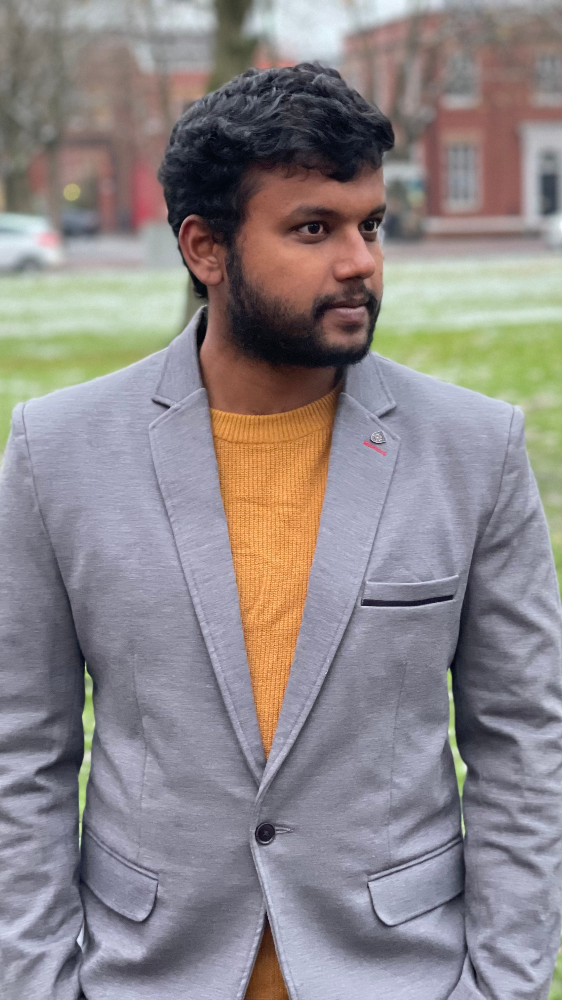

Empathy before implementation.
Each engagement begins with research, is sharpened by design, and ships through precision engineering.
THE COMPANY / HUMAN-CENTERED FUTURES
BOTDEFENSE designs intelligent platforms for enterprise and emerging creators. We blend AI, immersive interfaces, and ethical data practice to build products that feel alive.
MISSION & VISION / 01
Our mission is to create digital ecosystems that are intuitive, inclusive, trustworthy, and responsibly engineered. Our vision is a connected future shaped by immersive spaces, conversational interfaces, and clear analytics.
Each engagement begins with research, is sharpened by design, and ships through precision engineering.
Interfaces, storytelling, and product flows designed to feel clear and alive.
ML models, copilots, and workflow automation with privacy, governance, and transparency in mind.
XR labs, 3D environments, and interactive simulations for enterprise training and product experiences.
OUR JOURNEY / 02
From early client systems and web products, BOTDEFENSE expanded into AI labs, automation, internal R&D, global technology internships, and enterprise partnerships.
FOUNDER & CEO / DINDI NARENDRA KUMAR MADALA
A technologist, educator, and entrepreneur, Mr. Narendra has spent over a decade building products that transform how people learn and work. He leads BOTDEFENSE with a focus on ethical AI, community impact, and accessible innovation.
ceo@bdits.in ↗
+91 85208 46598 ↗
